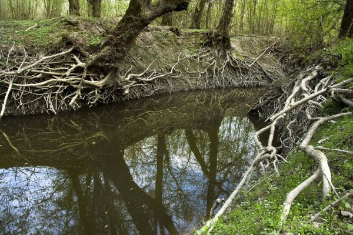
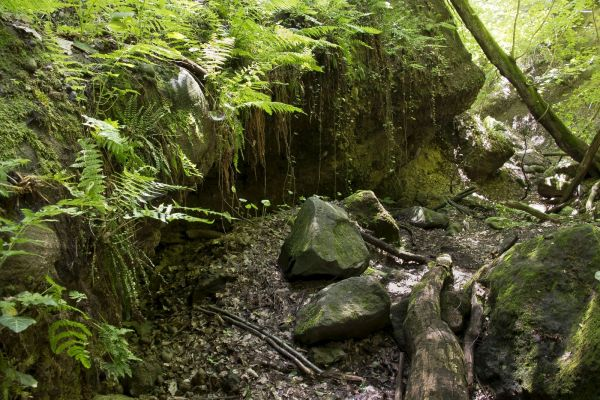

Csodás tájkép
Tükröződő fák egy kis tó partján a Duna mentén.
Kosárba
20000 Ft
Tiszai gát

Poroszló menti Tisza töltés viharos idóben.
Kosárba
10000 Ft
Börzsöny

Kilátás a fák mögül a szemközti hegyoldalra Hollókő.
Kosárba
2300 Ft
Pléska-szikla felé

Úton a Pléska-szikla felé az őszi erdőben.
Kosárba
22000 Ft
Vladukt
Biatorgybágyi viadukt a fák között.
Kosárba
2300 Ft
Régi présház

Elhagyott présház Biatorgybágy fölött.
Kosárba
3000 Ft
Nyakas-kő

Innen ugratta Ördög nevű lovát a mélybe Sándor Móricz gróf.
Kosárba
23000 Ft